01Предмет внутри лианы и выбор сундука
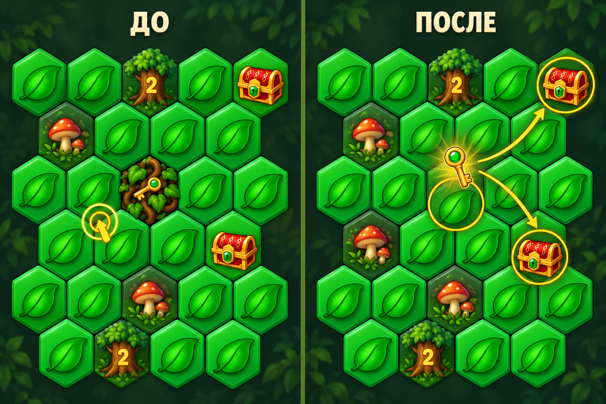
Что добавляем. У покрытия появляется необязательный вложенный предмет: ключ, деталь или награда события. Он виден поверх листа. Предмет выпадает именно при снятии последнего слоя покрытия; содержимое самой клетки раскрывается отдельно по обычным правилам.
| На поле | Действие | Результат |
|---|---|---|
| Ключ в обычной лиане | Открыть подходящего соседа | Снять лиану и получить ключ |
| Ключ в двух слоях лиан | Сделать два подходящих соседних открытия либо использовать помощь | Ключ получить только после последнего слоя |
| Видимый сундук с цветным замком | Нажать сундук и потратить ключ этого цвета | Сразу получить показанную награду, без дополнительного удара |
Решение игрока. Потратить энергию на боковые клетки ради ключа или завершить основную цель. Если ключ уже есть — открыть сундук с энергией, сундук с древесиной либо сохранить ключ для следующих уровней и входа в событие. Ключ и замок генерируются независимо в разрешённых местах уровня.
Ключи сохраняются между уровнями. Сам пропущенный сундук остаётся на пройденном поле; вернуться к нему через выбор локации нельзя. Перед переходом дальше доступен уже найденный сундук. При нехватке ключа он предлагает докупить ровно один нужного цвета. Дополнительные цвета вводятся вместе с подходящими типами уровней.
02Вода приводит в действие объект на поле
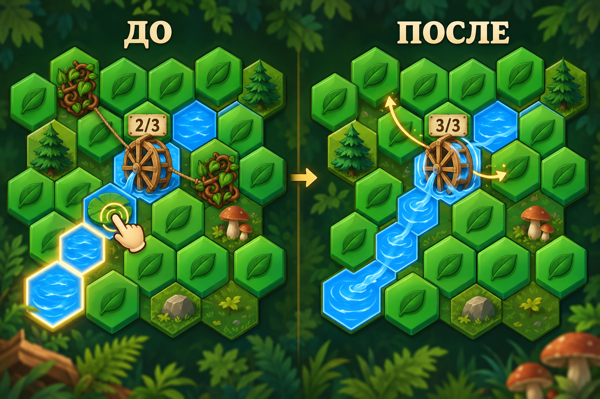
Что добавляем. Водяное колесо связано с небольшим водоёмом и двумя конкретными клетками. Связи видны заранее. Засчитываются первые открытия водных клеток этого водоёма, в том числе бустером. Нажатие на уже открытую воду ничего не даёт.
| Состояние | Переход | Эффект |
|---|---|---|
| Колесо 0/3, 1/3 или 2/3 | Открылась ещё одна отмеченная водная клетка | Счётчик увеличивается на один |
| Колесо 3/3 | Автоматическое срабатывание | Снять один слой лиан или досок с каждой из двух связанных клеток |
| Колесо отработало | Последующие открытия воды | Повторного эффекта нет |
Обычный лист под снятым покрытием остаётся закрытым. Если в последнем слое был ключ из первого раздела, он сразу освобождается. Если объект связан с дверью события, его выходом может быть активация печати вместо снятия покрытий — это видно по соединению.
Решение игрока. Открывать клетки у самой лианы или потратить открытия на воду, которая одновременно двигает цель уровня, лодку и колесо. Геометрия водоёма задаёт цену помощи. Работает только внутри текущего поля; состояние воды между локациями не переносится.
03Бабочка направляет действие цветка
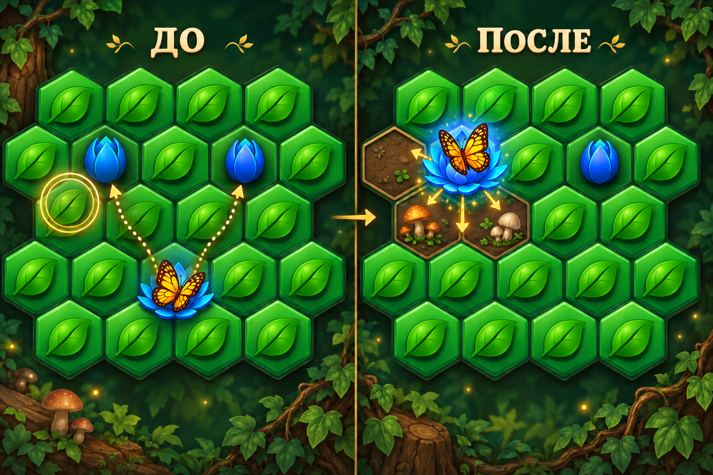
Что добавляем. Особый нектарный бутон использует знакомую реакцию на соседнее открытие. На поле есть одна бабочка и два-три таких бутона. Обычные лунные цветы сохраняют свои правила; нектарный вариант обозначается бабочкой на лепестке.
- Соседнее открытие будит бутон. Его две клетки помощи подсвечиваются заранее.
- Свободная бабочка перелетает к разбуженному бутону.
- Опылённый цветок открывает до двух отмеченных обычных клеток рядом. Лианы и доски останавливают этот эффект.
- Бутон считается использованным. У бабочки остаётся ещё один перелёт, после которого она улетает с поля.
Если одно действие разбудило несколько бутонов, бабочка выбирает ближайший; при равенстве — первый по видимому порядку меток. Уже открытая клетка повторной награды не даёт. Действие другого объекта тоже может разбудить бутон.
Решение игрока. Сначала направить бабочку к цветку у нужного гриба, у водоёма или у запертого предмета. Открыть водную клетку цветком — значит одновременно приблизить запуск колеса. Два перелёта ограничивают цепочку; порядок открытий определяет её маршрут.
В цветочных сюжетных уровнях этот набор встречается чаще; в соответствующем сайд-ивенте опылённые бутоны могут быть целью уровня. Для этого не требуется дополнительная система поручений.
04Собранные детали ремонтируют клеточный объект
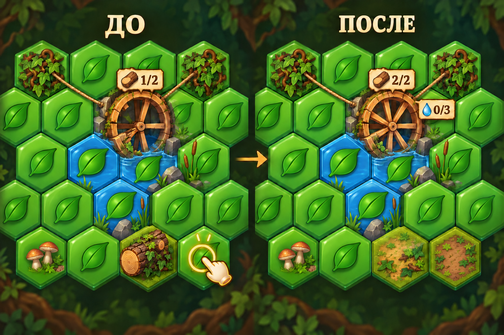
Это второй проход разработки. Ресурс всего один — строительная древесина. Небольшая связка крепится к покрытию так же, как ключ. Снятие последнего слоя выдаёт одну единицу в постоянный запас. Она визуально отличается от полена, которое может быть обычной целью уровня.
| Объект | Цена | Что меняется сразу на поле |
|---|---|---|
| Сломанное колесо | 2 древесины | Начинает реагировать на открытия воды по правилам раздела 2 |
| Повреждённая опора сундука | 1 древесина | Сундук становится доступен для обычного открытия ключом |
Игрок нажимает на каркас и выбирает ремонт; материалы списываются только по этому действию. Находка древесины сама ничего не тратит. У колеса можно заранее открыть воду: при ремонте учитываются уже открытые отмеченные клетки. Если открыты все три, отремонтированное колесо сработает сразу.
Решение игрока. Потратить две детали ради помощи на текущем поле, одну ради сундука или сохранить их для следующих уровней. Ремонт меняет возможности конкретной клетки. Все каркасы размещены на предусмотренных местах в сюжетном уровне или сайд-ивенте.
Между уровнями переносится только неиспользованная древесина. Починенное колесо остаётся частью пройденного уровня. Развитие на длинной дистанции можно добавить через улучшение инструмента: например, после пяти ремонтов колёса снимают по два слоя. Это улучшение следует вводить после проверки базовых взаимодействий. Монетизация — докупка недостающей детали непосредственно у каркаса.
05Дверь в сайд-ивент готовится действиями на клетках
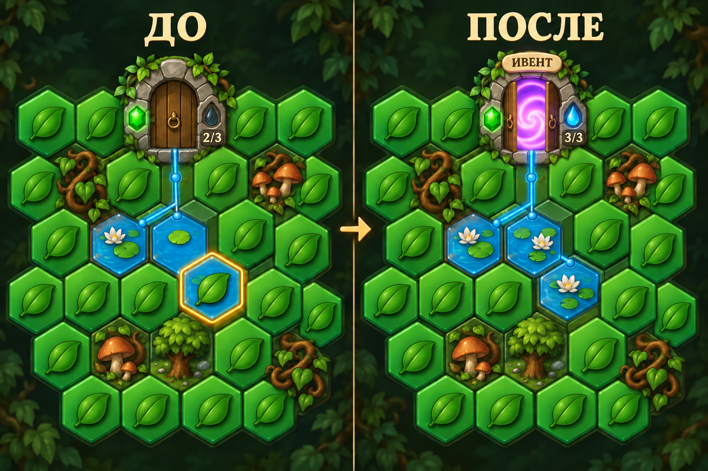
Что добавляем. Редкая дверь занимает видимую клетку обычного сюжетного уровня. У неё два гнезда с понятными значками. Один показывает нужный ключ, второй — локальное условие поля.
| Вариант двери | Второе условие | Какие клетки игрок использует |
|---|---|---|
| У ручья | Открыть три отмеченные клетки воды или запустить связанное колесо | Вода, бустеры, цветок рядом с водой |
| На поляне | Опылить два отмеченных бутона | Бабочка и соседние открытия |
| В зарослях | Освободить две клетки с печатями | Лианы, доски, связанное колесо |
Условие выбирается из набора, совместимого с готовой маской уровня, и фиксируется до первого хода. Его нельзя заменить задним числом. Зелёное свечение ключевого гнезда означает наличие ключа в запасе; списание происходит только при активации готовой двери.
Решение игрока. Выполнить основную цель кратчайшим способом или потратить дополнительную энергию на подготовку входа. Уже подготовленную дверь можно открыть тем же ключом, который подходит сундуку рядом. Награда события и его длительность показаны у двери до траты.
Активированный вход добавляет обычную кнопку сайд-ивента; основная сюжетная цепочка продолжается в прежнем порядке. До ухода с уровня можно докупить ключ, энергию либо недостающую активацию печати. Если игрок уходит с неподготовленным входом, возможность пропадает, неистраченный ключ остаётся. Таймер самого события начинается по правилам этого события после активации входа.
06Общие правила создают разные комбинации
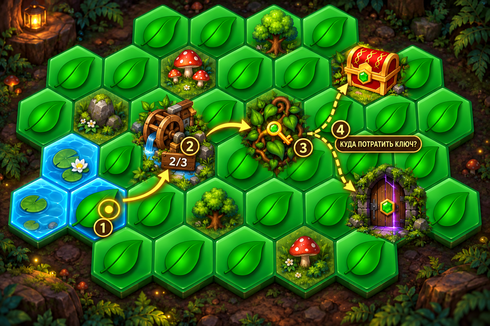
Система состоит из нескольких повторно используемых правил. Покрытие хранит предмет. Объект реагирует на заданные открытия. Его эффект действует на связанные клетки. Полученный предмет позволяет использовать другой объект. Автор уровня выбирает размещение и связи; конкретную последовательность задают действия игрока.
| Сочетание | Возникающий выбор |
|---|---|
| Бабочка и бутон около воды | Собрать ближайшую цель или зарядить колесо через цветок |
| Колесо и лиана с ключом | Добраться до ключа напрямую или использовать водные открытия |
| Ключ, сундук и дверь | Получить текущую награду или открыть сайд-ивент |
| Древесина и сломанное колесо | Потратить запас на помощь сейчас или сохранить для другого каркаса |
Встраивание в существующие уровни. Сохраняются маска, основные цели и сюжетный порядок. Для подходящих уровней заранее отмечаются места дополнительных объектов. В лесу чаще встречаются вложения в лианах; в водных уровнях — колёса; на полянах — нектарные бутоны. Сайд-ивенты могут делать одну из этих механик центральной целью.
В начале достаточно одной небольшой связки на уровне. Ключи могут быть частыми, сундуки — реже, двери — редкими. Частоты задаются на отрезок сюжетной цепочки с ограничением серии без находки. Генератор проверяет, что у колеса достаточно водных клеток, у бутона есть клетки помощи, а условие двери достижимо. Предметы в покрытиях не увеличивают числовую подсказку о содержимом клеток; новые скрытые цели учитываются обычным способом.
Однозначные реакции. Каждая клетка засчитывает своё первое открытие один раз. Снятие лианы не считается открытием листа под ней. Колесо срабатывает один раз, бутон используется один раз, у бабочки два перелёта. Открытия от помощи запускают те же разрешённые реакции. Идентификаторы находок сохраняются при повторной попытке: уже полученный ключ или древесину нельзя выдать второй раз.
Первый прототип: предмет в лиане → два альтернативных сундука; затем водяное колесо, освобождающее такой предмет. После этого — бабочка и дверь. Ремонт за древесину подключается вторым проходом к уже понятным клеточным объектам.
Опоры в коде: ForestConfiguration.ts, ForestCellCover.ts, BaseCellsProvider.ts, ForestScreen.ts, ContentType.ts. Список использованных изображений проекта и промпты иллюстраций сохранены рядом с документом.
Восстановление как общий результат. У каждой мини-загадки три состояния: повреждённый объект с видимым условием → действия на связанных клетках → работающий или оживший объект. Награда выдаётся один раз; цветение, свет, чистая вода или починенная конструкция остаются на поле после её получения. Ниже — 13 вариантов для разных уровней. Размещать их все на одном поле не нужно.
Как они переплетаются. Одно первое открытие воды может зарядить и колесо, и цветок, если оба связаны с этой клеткой. Колесо может освободить деталь для насоса; насос — сделать доступным сундук; ключ для сундука может также подходить люку. Все связи и области действия показаны до траты. Одинаковые ремонтные гнёзда принимают одинаковые детали, поэтому игрок выбирает, какой объект восстановить. Каждый объект срабатывает не более одного раза; полученная награда не запускает собственную повторную выдачу.
Запасы и необязательность. Ключи и строительная древесина сохраняются по правилам выше. Линза, стрелка компаса, шестерни и другие специальные детали в этих примерах — находки текущего уровня. Краб и пробуждённый бутон засчитываются связанному объекту автоматически; переносимый ключ или материал расходуется нажатием на выбранное гнездо. Основная цель уровня не требует завершать секрет. После выполнения основной цели можно закончить мини-загадку за оставшуюся энергию или уйти дальше; дополнительные клетки не увеличивают обязательный план. Вход в событие заранее показывает тему и награду, а при нехватке покупается конкретный недостающий предмет.
Границы скрытых клеток. В шаблоне уровня заранее заданы их координаты, награды и связи. Маяк снимает туман с существующих клеток; клён, рычаг и лесенка активируют отдельную бонусную область. Её подсказки считают только клетки своей области и слоя, что обозначено общей рамкой. Старые числа не пересчитываются. Контуры будущих клеток и видимый активатор входят в превью уровня.
Мини-загадки с восстановлением
13 новых пар «до / после». Выберите сцену, чтобы перейти к условию, действию и награде. Каждая пара показывает отдельный пример размещения на уровне.
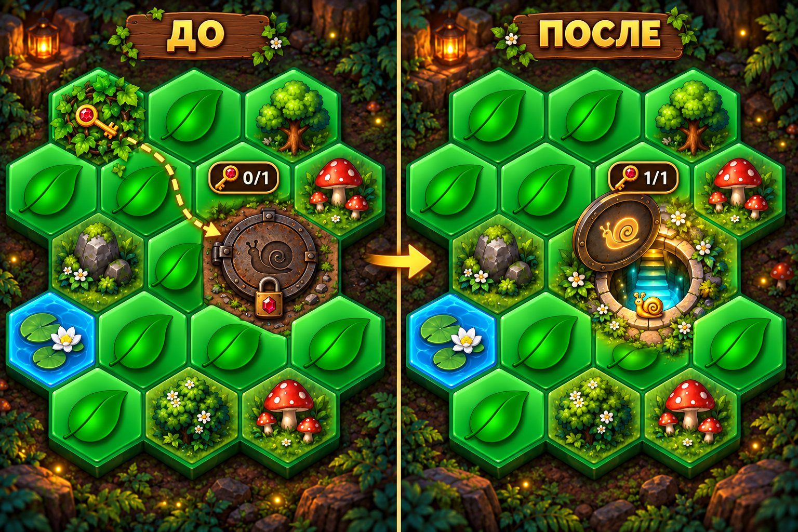
07 · Рубиновый люк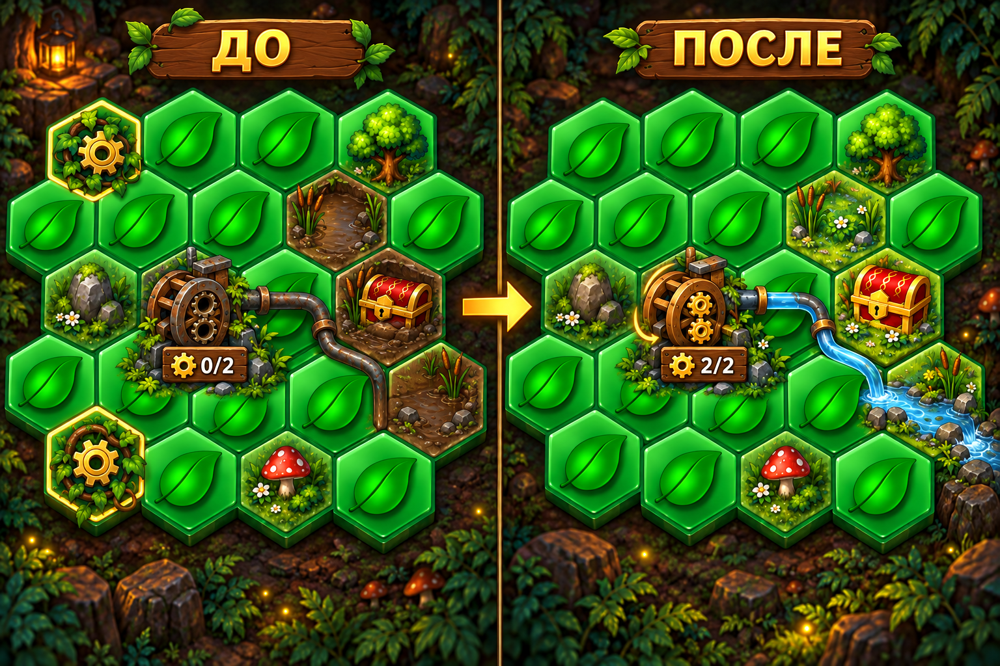
08 · Насос и шестерёнки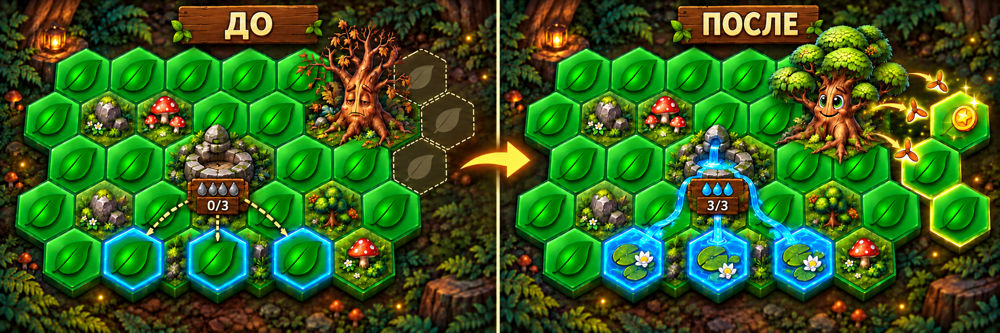
09 · Пробуждение клёна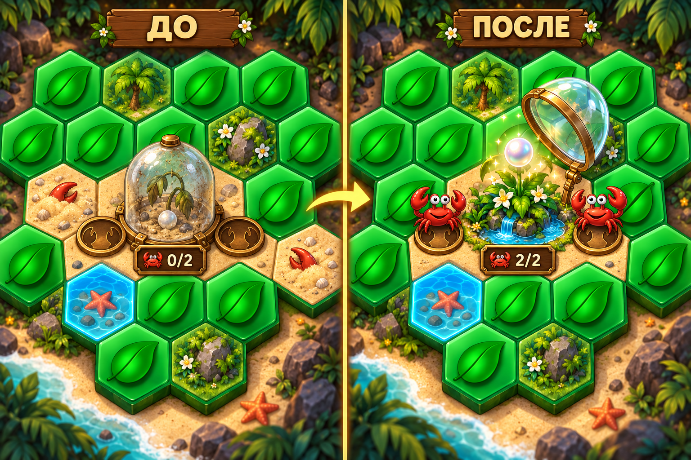
10 · Два краба и стекло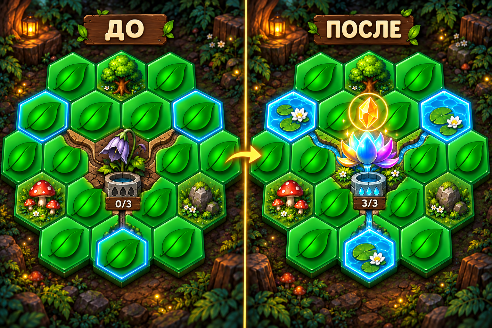
11 · Полив цветка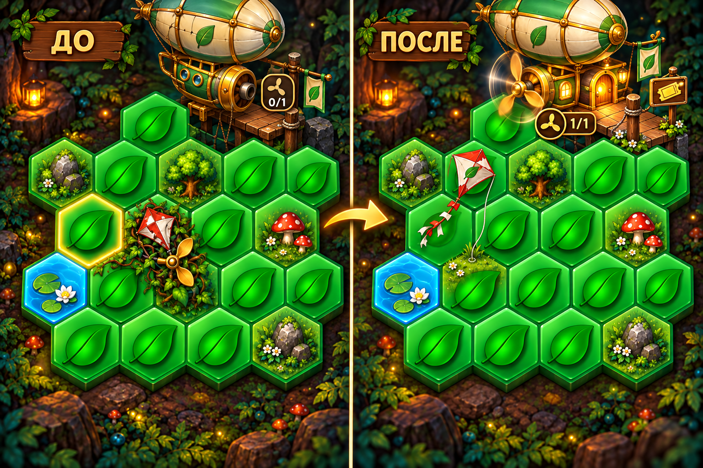
12 · Дирижабль и змей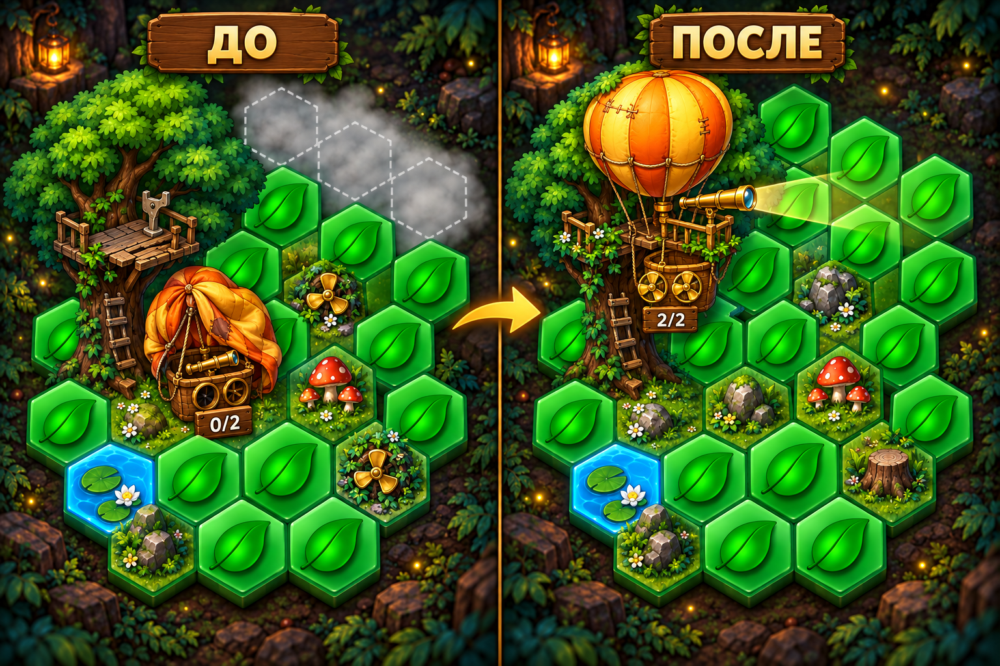
13 · Шар и телескоп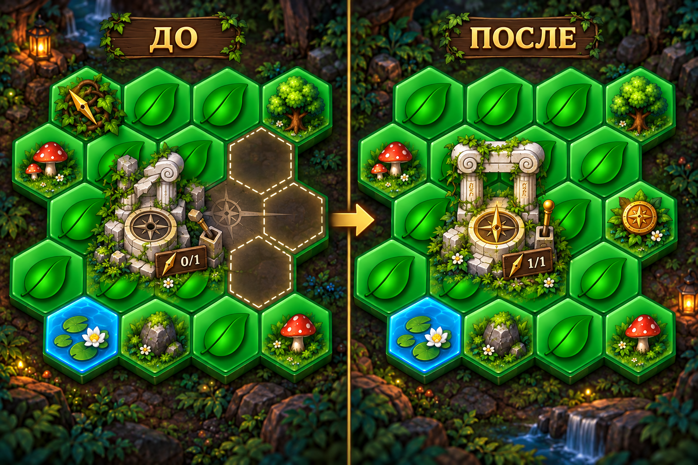
14 · Руины и рычаг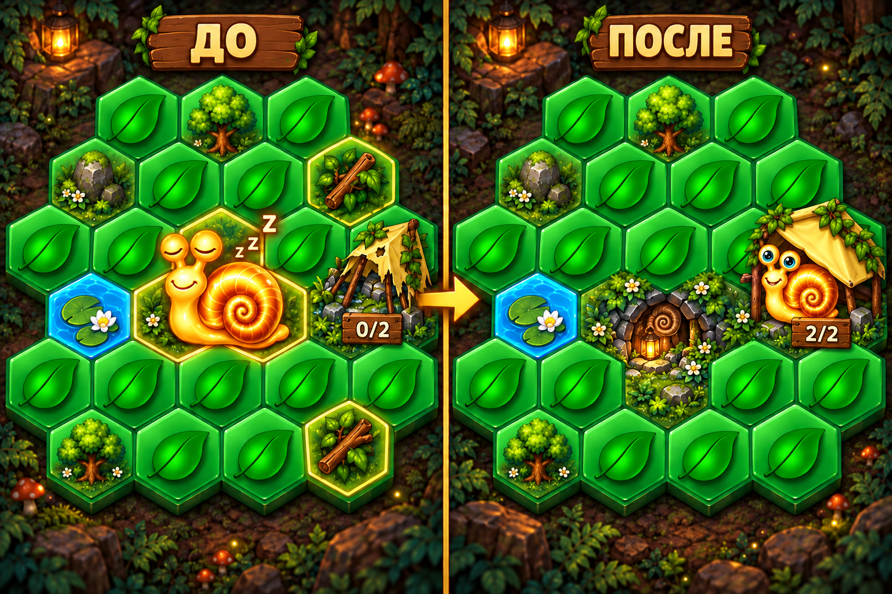
15 · Шалаш для улитки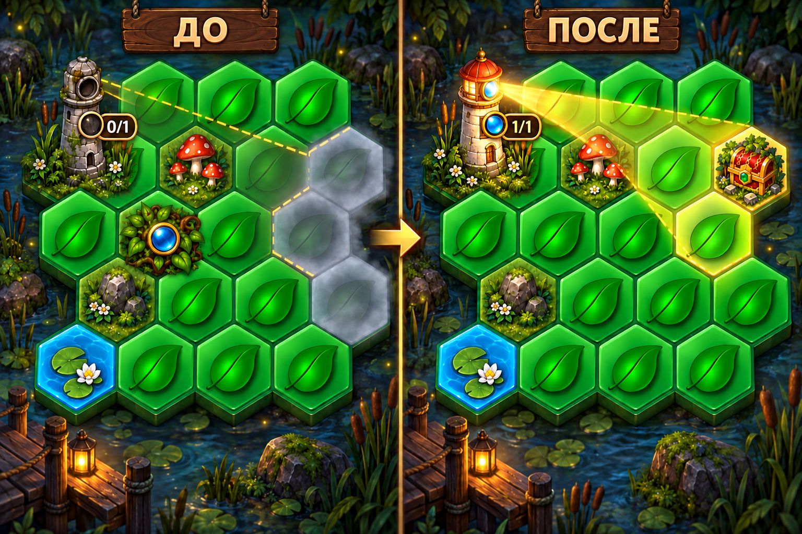
16 · Линза маяка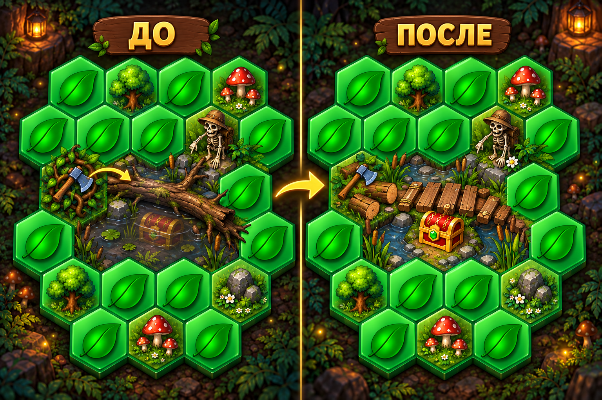
17 · Переход в болоте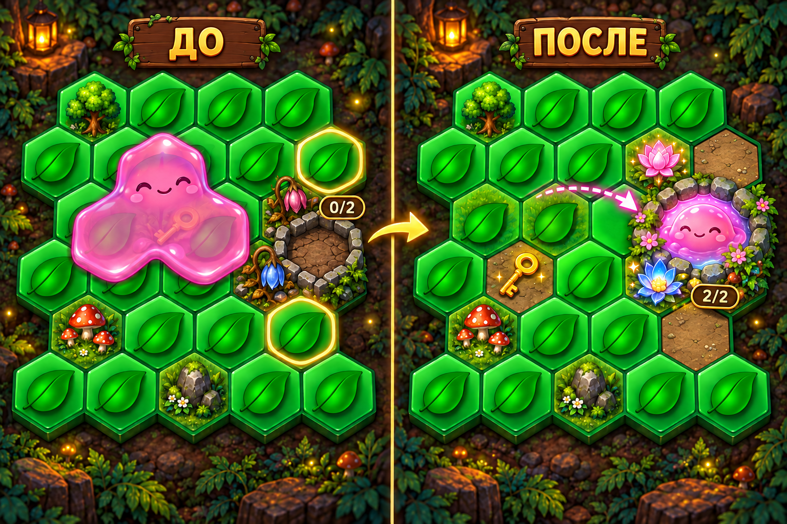
18 · Сад для гига-желе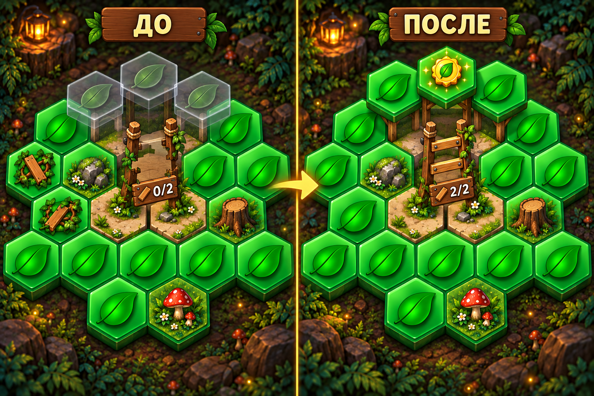
19 · Лесенка и верхний слой07Рубиновый люк с улиткой на крышке
Условие. Сам люк становится виден после обычного вскрытия своей клетки. Оттиск сообщает тему содержимого: здесь — улиточный сайд-ивент. Рубин на замке и иконка ключа сообщают цену; счётчик показывает наличие ключа, после активации — выполнение условия.
Действие и результат. Освободить рубиновый ключ из лианы либо использовать запас → нажать люк → списать один ключ и сразу открыть вход. Дополнительного удара по крышке нет. Восстановленный спуск остаётся светиться после выдачи доступа. Тот же ключ можно сохранить или потратить на рубиновый сундук.
08Шестерёнки запускают насос
Условие. Найти две шестерёнки, снимая последние слои их лиан, и установить в насос. Находка не вскрывает обычный лист под лианой. Труба заранее показывает три клетки, которые изменятся.
Результат. Насос один раз снимает болотное покрытие с связанных клеток. Если под ним был лист, его ещё предстоит открыть; сундук становится доступным. Замок сундука — отдельное, заранее видимое условие. После сбора награды насос вращается, вода течёт, на берегу остаются цветы. Альтернативное размещение: насос освобождает деталь другого устройства вместо сундука.
09Источник пробуждает засохший клён
Условие. Открыть три отмеченные водные клетки, напрямую или помощью. Источник считает каждую один раз; при 3/3 вода достигает корней. Клён оживает и выпускает одну порцию из трёх семян.
Результат. Появляются три бонусные клетки, одна с обозначенной ценной находкой. Открывать их необязательно. Крона и источник остаются живыми после сбора бонуса.
Связь с существующим клёном. В проекте уже есть выброс семян и повторное засевание подходящих открытых клеток. Это можно использовать в первом прототипе. Показанная поляна за краем — предлагаемое расширение: заранее зарезервированные координаты с отдельными подсказками. Она не возникает в произвольном месте.
10Два краба открывают стеклянный тайник
Условие. На двух песчаных покрытиях видны клешни. Снятие песка освобождает краба; лист под покрытием сохраняется. Краб сам занимает одну из площадок конкретного колпака. Требуется пара, порядок находок произвольный.
Результат. При 2/2 крабы поворачивают створки водовода: вода промывает стекло, колпак поднимается, растение расправляется и выдаёт одну жемчужину. Крабы остаются у оазиса. В другом шаблоне под колпаком может быть вход или дополнительная клетка; тип содержимого всегда виден через стекло.
11Политый цветок выдаёт ценность
Условие. Три отмеченные водные клетки питают резервуар. Когда открыты все три, полив срабатывает автоматически. Иконка в центре бутона заранее показывает класс награды.
Результат. Цветок выдаёт одну ценность и остаётся цветущим. Нажатия на уже открытую воду и повторный полив дополнительных наград не дают. Это наградной вариант цветка; нектарные бутоны из раздела 3 по-прежнему работают через бабочку.
Выбор. Взять основную цель ближайшим открытием или дойти до последнего источника. Если та же вода питает колесо либо клён, одно открытие завершит несколько подготовленных объектов.
12Воздушный змей возвращает винт дирижабля
Условие. Снять лианы с клетки змея. Один винт выпадает как ремонтная деталь; змей расправляется автоматически. Установить винт в стоящий у края дирижабль.
Результат. Отремонтированный дирижабль открывает отдельный наградной уровень или сайд-ивент, обозначенный билетом у каюты. Он остаётся пришвартованным на текущем поле. Основная сюжетная цепочка продолжается обычной кнопкой. Змей сохраняется как видимый след выполненной активности.
13Воздушный шар поднимает телескоп
Условие. Освободить два винта из зарослей на отмеченных клетках и установить в воздуходувку корзины. Шар поднимает телескоп к креплению на обзорной площадке; перила и настил восстанавливаются в той же анимации.
Результат. Телескоп делает доступными три заранее очерченные бонусные клетки у края. Их листья ещё нужно открыть. Направление обзора задано видимым креплением; игрок заранее знает, какую часть поля получит. Шар остаётся привязанным к целой площадке. Альтернативная награда — обнаруженный вход в событие в том же секторе.
14Компас в руинах включает рычаг
Условие. Рычаг и три контура видны уже в превью. Найти стрелку компаса и установить в пустое гнездо. После этого рычаг становится активным; его нажатие завершает восстановление.
Результат. Три тайные клетки материализуются в заранее заданных позициях. Медальон на одной сообщает о награде. Для варианта в центре поля заранее оставляется подходящий проём; у края — дополнительный выступ. Положение стрелки также указывает сектор появления, поэтому связь читается без диалога.
15Шалаш освобождает проход под мега улиткой
Условие. Добыть две опоры из лиан и починить шалаш. В экономном варианте используются две единицы общей строительной древесины: можно потратить запас вместо поиска местных вложений. Цена и зона, которую освободит улитка, известны заранее.
Результат. Улитка просыпается и уходит в подготовленное убежище. Её участок становится доступным: обычные листья сохраняются, пещера открывает улиточный бонусный уровень. Шалаш и бодрая улитка остаются на поле. Это альтернативный способ подготовить вход; обязательного ключа сверх показанного ремонта нет.
16Линза возвращает свет маяку
Условие. Освободить линзу и установить её в маяк. Три клетки сектора и направление луча показаны до ремонта.
Результат. Маяк снимает туман с этих клеток: можно увидеть покрытия, предметы и выбрать следующие открытия. Листья и лианы сохраняются. Подсвеченный сундук ещё нужно освободить и открыть подходящим ключом. Свет остаётся включённым до конца уровня.
Вариант взаимодействия. Колесо из раздела 2 может освободить линзу своим эффектом. Тогда открытия воды одновременно продвигают основную цель и готовят разведку секретного сектора.
17Топор восстанавливает переход через болото
Условие. Освободить топор из лиан, затем применить к отмеченному завалу. Одного применения достаточно: бревно разбирается, вода уходит по руслу, части бревна складываются в настил.
Результат. Сундук становится доступным, его видимый замок по-прежнему требует ключ. Настил и чистый сток остаются после награды. Скелет служит постоянной визуальной подсказкой направления поиска. В другом размещении завал можно устранить связанным механизмом; второй способ не выдаёт награду повторно.
18Гига желе переселяется в восстановленный сад
Условие. Пробудить оба отмеченных нектарных бутона обычными соседними открытиями. Каждый даёт один из двух сигналов приманки. Чаша и конечное положение желе заданы заранее.
Результат. Желе целиком освобождает свой участок и остаётся живым розовым прудиком среди цветов. С открытой клетки можно забрать ключ; два листа на остальных клетках ещё закрыты. Если цветок помощи или бустер открывает соседа бутона, это также считается. Повторно уводить желе ради второй награды нельзя.
19Починенная лесенка открывает верхний слой
Условие. Выполнить два требования в любом порядке: открыть три отмеченные нижние клетки и установить две найденные ступени. На иллюстрации нижние опоры уже открыты; осталось закончить ремонт 0/2 → 2/2. Пока опоры закрыты, у их контуров видны отдельные метки готовности.
Результат. Лесенка соединяется с площадкой; на тех же координатах, выше нижнего слоя, становятся доступны три новых листа. Подложка и тени показывают наложение по принципу маджонга. Подсказки верхнего слоя работают внутри него. Площадка не закрывает незавершённые обязательные клетки: активация возможна только над уже открытыми опорами. После сбора бонуса остаётся целая лесенка с зелёными перилами.